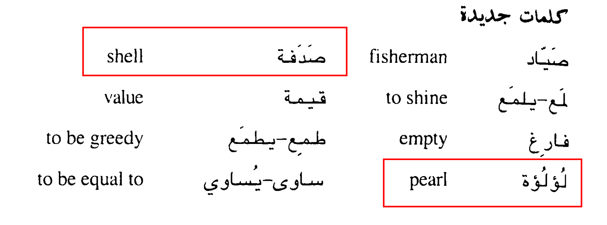

الصياد واللؤلؤة
The Fisherman and the pearl
كان صياد يصيد سمك في نهر، فرأى في يوم من الأيام صدفة جميلة تلمع في الماء فظن أنها جوهرة لها قيمة عالية
و كان في شبكته سمكة فتركها ورما نفسه في الماء ليأخذ الصدفة، فلما أخرجها وجدها فارغة، فندم لأنه ترك السمكة وطمع في
الصدفة.
وفي اليوم التالي ذهب الى مكان اخر من النهر وانزل شبكته في الماء فوقعت فيها سمكة صغيرة ، و رأى بجانب السمكة صدفة فلم
ينتبه لها وتركها فمر صياد آخر وأخذها فوجد فيها لؤلؤه يساوي مالا كثيرا
